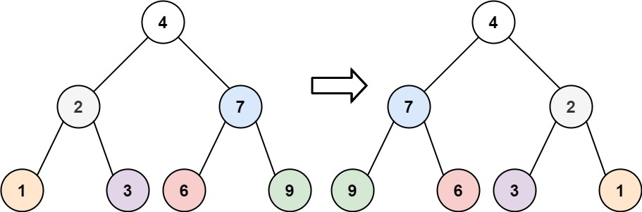
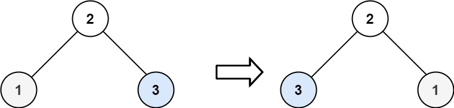

题面
给你一棵二叉树的根节点 root ，翻转这棵二叉树，并返回其根节点。
示例 1：

输入： root = [4,2,7,1,3,6,9]
输出：[4,7,2,9,6,3,1]示例 2：

输入： root = [2,1,3]
输出：[2,3,1]示例 3：
输入： root = []
输出：[]提示：
- 树中节点数目范围在
[0, 100]内 -100 <= Node.val <= 100
思路
- 和最大深度一样的模式（反向递归 / 有返回值的递归）：
- 递归处理左右子树，拿到结果
- 用结果在当前层做事
- 返回当前节点
- 对比最大深度和翻转二叉树：
**最大深度**：问左右子树"你多深？"，拿回**数字**，组合成答案
```python
left = self.maxDepth(root.left) # 返回数字
right = self.maxDepth(root.right) # 返回数字
return max(left, right) + 1 # 组合数字
```
**翻转二叉树**：叫左右子树"去翻转自己"，拿回**翻转好的子树**，交叉接上
```python
left = self.invertTree(root.left) # 返回翻转好的左子树
right = self.invertTree(root.right) # 返回翻转好的右子树
root.left = right # 左边接原来的右子树
root.right = left # 右边接原来的左子树
return root
```- 终止条件
return（即return None）：空节点翻转后还是空，上一层接到 None 赋给root.left或root.right，正好表示"这边没有子树" - 另一种写法用
tmp保存root.left后边算边赋值，本质一样，只是"先算完再赋值"的写法不需要tmp，更清晰
代码实现
class Solution:
def invertTree(self, root: Optional[TreeNode]) -> Optional[TreeNode]:
if not root:
return
left = self.invertTree(root.left)
right = self.invertTree(root.right)
root.left = right
root.right = left
return root- 复杂度：时间 O(n)，空间 O(n)（递归调用栈）
解法二 栈 迭代
思路
- 最朴素的 DFS 用栈：弹一个节点出来，交换它的左右孩子，再把孩子入栈继续处理
- node 不用再入栈：弹出后当场就交换完了，入栈的
node.left和node.right是为了后续去交换它们的子节点 - 和最大深度 BFS 的对比：
- 最大深度：需要知道"第几层"，必须用
tmp分层，每处理完一层res += 1 - 翻转二叉树：只需要"每个节点都访问到并交换左右"，不关心层数，不需要分层
- 和颜色法（中序遍历）的对比：
- 颜色法：节点要进栈两次——第一次 WHITE 展开（拆成左、自己、右放回去），第二次 GRAY 才处理。因为中序要求先左、再自己、后右，弹出 node 时左子树还没处理，不能当场输出，必须放回去等
- 简单栈：节点只进栈一次，弹出就当场处理（交换左右），然后把孩子入栈。因为翻转不关心顺序，先处理谁都行
- 核心区别：处理顺序有没有要求。有要求（左→根→右）就需要颜色标记来"延迟处理"；没要求就弹出直接做
代码实现
class Solution:
def invertTree(self, root: Optional[TreeNode]) -> Optional[TreeNode]:
if not root:
return
stack = [root]
while stack:
node = stack.pop()
if node.left: stack.append(node.left)
if node.right: stack.append(node.right)
# node不用再入栈了，因为左右节点换一遍就够了，再入栈node，就会重复换
node.left, node.right = node.right, node.left
return root- 复杂度：时间 O(n)，空间 O(n)（栈的深度）